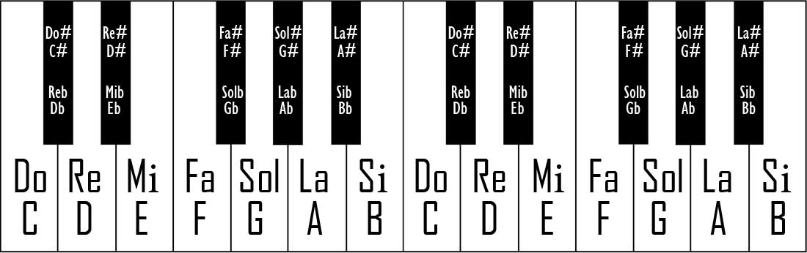

Müzik Teorisi ve Solfeje Giriş I
Bu yazı serisiyle birlikte plaj gitaristi avına çıkıyoruz. Gitarın bir ergen enstrümanı haline gelmesi bu çağın vebası. Birkaç akorun basılması ve tellere vurulacak birkaç kalıplaşmış ritmin öğrenilmesinin müzisyenlik olarak anılması bu işin bütün ciddiyetini yok ediyor.
Eğer hayatınızı müziğe vermemişseniz, bütün gününüz müzikle uğraşarak geçmiyorsa ve kulağa hitap eden tüm sesleri elinizle koymuş gibi o belirsizlik içerisinde bulabiliyorsanız, notaların adını bilmenize gerek yok. Müzik teorisi bu aşamada bireysellikten dışarı çıkılmadığı sürece gereksiz, fakat doğal olarak bu geçerli değilse ve müzik yapmaya heveslendiyseniz bu kavramı seve seve öğreneceksiniz. “X müzisyeni nota bilmiyormuş” bahanelerinde yer alan müzisyenler başta saydığım sınıfa giriyor. Dolayısıyla bu bahaneler herkesi kapsayacak nitelikte değil.
Şimdi bireysellik konusuna girelim. Müzik teorisi müziğin matematiğidir; formüle edilmiş, kağıda dökülmüş ve etkin olarak kullanabilmek adına parçalara ayrılmış halidir. Bilmeyen birinin ortaya çıkaracağı ses yığını, yalnızca kendine ve çok nadir kişiye, büyük oranda müzikten hiç anlamayan insanlara hoş gelir. Müzisyenler arasında iletişimin anahtarıdır. Bir grup olarak iş yapılacağı zaman herkesin hangi notanın, hangi gamın, hangi ritimlerin kullanılacağını bilmesi açısından gereklidir. Müzik teorisi bu şekilde. Solfej ise o herkesin kafasında canlanan, bunların kağıt üzerinde sanatsal olarak gösterim şeklidir.
Batıda notalar ortaya çıkmadan önce, parçalar taklit yoluyla yayılmaktaydı. İnsanlar parçaları bir başkasının çalışına bakarak, dinleyerek aynısını çıkartmaya çalışarak çalıyordu. Burada her şey muğlak ve göreceliydi. Parçalar değişim geçiriyor ve kayıt imkanı olmadığı için yıllar geçtikçe yok olabiliyorlardı. Müziğe herkesin kabul ettiği, evrensel bir gösterim gerekliydi ve notalar ortaya çıktı.
Notalar aslında çok basit kavramlar ve bu alanda ritimler hariç her şey notaların üzerine inşa ediliyor. Giriş yapmak için önce sesi bir bütün olarak ele alalım ve parçalayarak yavaş yavaş daha karmaşık konulara doğru ilerleyelim.
Ses denen olgu titreşimden ibarettir. Kulaktaki reseptörler yalnızca bu titreşimleri algılayarak sinirler yardımıyla beyne gönderir ve orada bu sinyaller insan algısına yönelik biçimlere dönüştürülür. Kulağın tek özelliği sesi algılama konusunda hassas olmasıdır. Sağır olan insanlar dahi çok yüksek şiddetteki veya bas sesleri vücutları yardımıyla algılayabilir. Sesi oluşturan bu titreşimlerin sahip olduğu frekans, yani titreşme sayısı sesin incelik ve kalınlık arasındaki hangi aralıkta olacağını belirler. Bas seslerin frekansı düşüktür, bunun anlamı aynı zaman dilimi içerisinde daha az tekrar sayısına sahiptir. Tiz sesler ise tam tersi, çok daha fazla tekrara sahiptir. Tabii bunun fiziksel ismi dalgaboyu, fakat şu an işin içine fiziksel terimleri katmanın manası yok. Basitçe kavramanız yeterli. Sesleri üretmek için uygun frekansta titreşim yaratmak yeterli, fakat tek bir frekansın ham ve yalın titreşimi o sesi doğru verse de kulağa hoş ve sanatsal gelmez. Enstrümanlar sesi yapılarına göre süsler; farklı alt ve üst seslerle, kimi zaman aynı sesin farklı oktavlardaki versiyonlarıyla birleştirip insan kulağına hitap eder hale getirir.
İnsanlar sesin farklı frekans aralıklarını çeşitli tekrar eden parçalara böldüler. Batı müziğinde bu 7 aralık olarak belirlendi. Sonradan bu 7 tam ses aralığına yarım sesler de ilave edildi. Fakat her aralık doğrudan ikiye bölünmedi, seçimler tamamen kulağa hoş gelen kısımları ortak bir kararla seçme yönünde yapıldı. Sonuç olarak ortaya 12 aralıklı, kendini periyodik olarak tekrar eden bir yapı çıktı. Tekrar etmesinden kasıt şu: Blok flüt alarak gittiğiniz ilk ve ortaöğretim müzik derslerinde öğretilen “Kalın do” notasını hatırlayın. Müzikle ciddi olarak ilgilenen biri için kalın do diye bir şey yoktur, bu yalnızca tek bir oktavı temel alan çalışmalarda üstteki oktavda yer alan notadan bahsetmek için kullanılan bir tabir. Tıpkı burada olduğu gibi, nota sıralamaları bittiği noktadan tekrar başlayarak bu şekilde devam eder. Oktav bir notanın tekrar kendine ulaşılana kadar ilerlenen aralıktır. Örneğin Do - Do arası, Mi - Mi arası birer oktavdır.
Do, Re, Mi, Fa, Sol, La, Si olarak bilinen isimlendirmenin kaynağı Aziz Iohanne Battista olarak anılan bir Hıristiyan ilahisinden geliyor. Daha çok Akdeniz ülkelerinde notalar için bu isimlendirme kullanılsa da, birçok batı ülkesinde A, B, C, D, E, F, G şeklindeki isimlendirmeye rastlanır. Gitar çalanların sıklıkla karşılaştığı A, Em, F# gibi akorların isimlerinin bu şekilde olmasının nedeni de bu. İlginç olduğu için ve daha önce yazmayı planlayıp sonradan vazgeçtiğim bir yazıda yer alacağından şu ilk notasyonun kökenine bir göz atalım.
Ut queant laxis Resonare fibris Mira gestorum Famuli tuorum Solve polluti Labii reatum Sancte Iohannes
Başlangıçta ilk nota Ut olarak kullanılsa da, sonradan kulağa hoş gelmesi ve kesinti yaratmaması açısından Do ile değiştirilmiştir. Son notanın ismi ise düzeni bozduğundan dolayı bu şekilde kullanılmamış, çok daha sonradan Si olarak atanmıştır.
Bunlar 7 ana nota, 7 tam ses aralığı. Bunlara ek olarak, aralarında yer alan yarım seslik aralıklar bulunur. Bir notadan yarım ses ileri gidildiğinde o notanın diyezine (#), yarım ses geri gidildiğinde bemolüne (♭) ulaşılır. Dolayısıyla örneğin Do ile Re arasındaki sesin ismi hem Do diyez [C# (Evet C#, o programlama dilinin ismi buradan geliyor)], hem de Re bemol (D♭)‘dür. Bunları yeni öğrenen biri için diyez ve bemolden biri gereksiz gelebilir, tek bir sesi ifade etmek için birinden biri yetiyor. Fakat ilerleyen konularda neden gerekli olduğunu anlayacaksınız. Bir ipucu vermek gerekirse, bu tamamen solfej gösterimi için olması şart bir durum.
Bu aşamada en çok dikkat edilmesi gereken konuya geliyoruz. Mi ve Fa ile Si ve Do arasında ayrı bir ses yoktur. Bu notaların arası zaten yarım sestir. Bunun bu kadar önemli olmasının nedeni, tüm müzik teorisinin temelinin aslında bu kural olması. Şimdi batı müziğindeki notaların hepsini birden çıkaralım.
Do Do# Re Re# Mi Fa Fa# Sol Sol# La La# Si Do veya C C# D D# E F F# G G# A A# B C
Sondaki Do’yu eklememin nedeni, aralıktaki farkı daha iyi görebilmeniz adına. Notalar insan kulağının işitme sınırlarına ulaşana kadar aşağı ve yukarı frekanslara doğru tekrarlanarak devam eder.
Bunlar gitar klavyesindeki her bir perdede, piyanodaki siyah ve beyaz tuşların her birinde yer alan notaların tamamıdır. Piyanoda her beyaz tuşun arasında siyah tuş olmamasının nedeni de Mi - Fa ve Si - Do aralıklarının bu özel durumu.

Bu dersi burada bitirelim. İkinci yazıda çok daha ayrıntılı konulara girilecek, özellikle de gamların ve akorların nasıl yaratıldığından bahsedilecek. Bu sayede aklınıza gelebilecek standart her gam ve akoru yalnızca üzerinde düşünerek oluşturabileceksiniz. Bunlar ezberlenmesine hiç gerek olmayan, tamamen hesaplanarak ve kafa yorarak bulunabilecek yapılar. Aynı şekilde gitardaki ve piyanodaki tüm notaların hiçbir yere bakmadan nasıl bulunabileceğinin bilgisi de ikinci bölümde yer alıyor olacak.